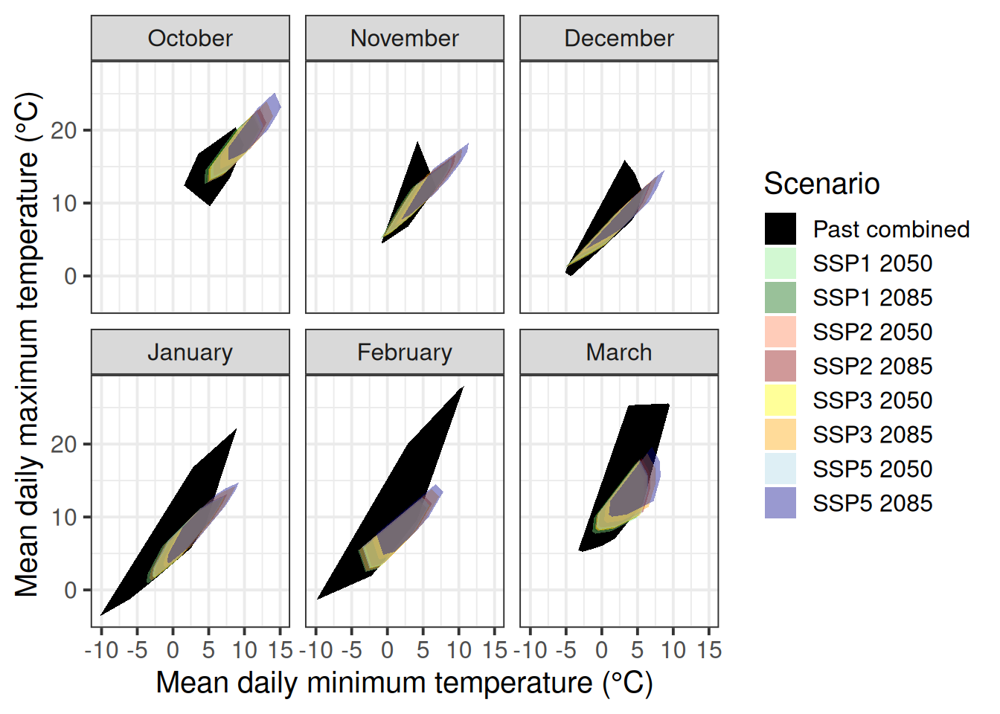
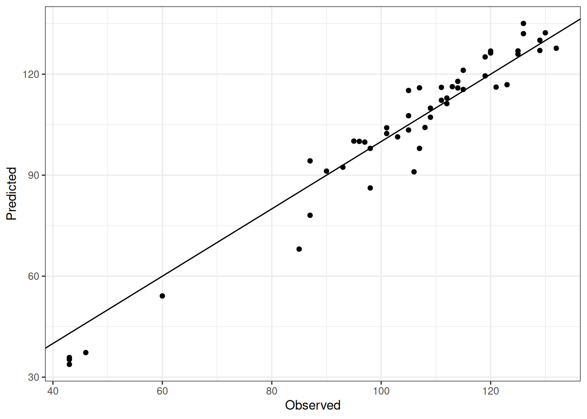
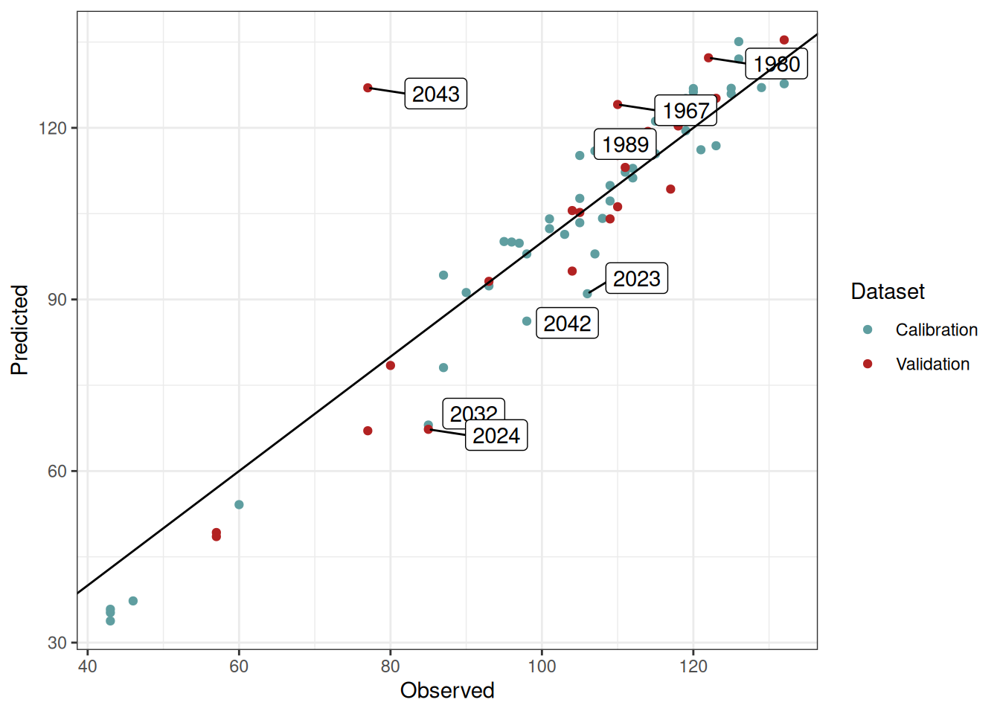

Chapter 34 A robust method to estimate future frost risks (?)
Learning goals for this lesson
- Apply the concepts learned in chapter Making valid tree phenology models
- Implement a robust (and hopefully valid) methodology to forecast spring phenology under future scenarios
- Assess the risk of frost events under future scenarios
34.1 Frost risk for future scenarios
We have seen in the previous chapter the importance of analyzing the risk of spring frost events in temperate fruit trees for historic periods. However, such analysis provides little information for planning strategies to adapt fruit orchards to potential frost events occurring in the future. What we actually need for supporting farmers in making decisions is an assessment of the probability of experiencing frost events (and ideally also their severity) in the future. Such an assessment should consider the prospective impacts of climate change.
This is not an easy task. On the one hand, spring frosts result from the occurrence of temperatures below the sensitivity threshold of the tree, which varies according to which kind of plant tissue is exposed to the cold. Plants become more sensitive to freezing temperatures as they develop from dormancy to harvest. On the other hand, tree development during and after dormancy is itself driven by temperature, with advancing or delaying effects depending on particular factors such as the species, cultivar and ultimately the place.
In our lab, we therefore believe that conducting a proper frost risk analysis for future scenarios requires i) a robust method for estimating future temperatures, and ii) a valid modeling framework to predict bloom dates in temperate fruit trees. Fortunately, we may be very close to fulfilling these two requirements as we have seen in chapters Future temperature scenarios and, most recently, The PhenoFlex model.
We will use some content of the chapter Making valid tree phenology models. As you (hopefully) remember, in that chapter we combined our dataset of past conditions in Campus Klein-Altendorf with the simulated conditions from our Experimentally enhanced PLS chapter. We used this to determine to what extent the combined temperature domain of these datasets covers the climatic conditions that are projected for future climate scenarios.
Here’s how we can create such a plot (very similar to what we did before):
# Load all the required packages for this lesson
library(chillR)
library(tidyverse)
library(patchwork)# Import the past weather dataset to build the hull plots for model validity domains
# Note: data from 01.01.1958 to 20.06.2019. Not complete season for bloom in 1958 (missing Oct-Dec 1957). Barely passing the threshold for bloom in 2019 (need to set mrange to c(9, 5) in genSeasonList for PhenoFlex calibration)
past_weather <- read_tab("data/TMaxTMin1958-2019_patched.csv")
# Add the column SSP_Time for further discrimination with future scenarios
past_weather$SSP_Time <- "Past"
# Summarize the data by month. Compute the mean of Tmin and Tmax by RCP_Time, Year, and Month
past_months <- past_weather %>%
group_by(SSP_Time, Year, Month) %>%
summarize(Tmin = mean(Tmin, na.rm = TRUE),
Tmax = mean(Tmax, na.rm = TRUE))
unstructured_future_temps <- load_temperature_scenarios("data/future_climate",
"Bonn_futuretemps")
future_temps <-
data.frame(bind_rows(lapply(unstructured_future_temps, bind_rows),
.id = "List"))
future_temps <- future_temps %>%
mutate(GCM = strsplit(List, '\\.') %>%
map(3) %>%
unlist(),
SSP = strsplit(List, '\\.') %>%
map(2) %>%
unlist(),
Time = strsplit(List, '\\.') %>%
map(4) %>%
unlist()) %>%
select(DATE, Year, Month, Day, Tmin, Tmax, SSP, Time, GCM)
future_temps[future_temps$SSP == "ssp126","SSP_Time"] <-
paste("SSP1", future_temps[future_temps$SSP == "ssp126","Time"])
future_temps[future_temps$SSP == "ssp245","SSP_Time"] <-
paste("SSP2", future_temps[future_temps$SSP == "ssp245","Time"])
future_temps[future_temps$SSP == "ssp370","SSP_Time"] <-
paste("SSP3", future_temps[future_temps$SSP == "ssp370","Time"])
future_temps[future_temps$SSP == "ssp585","SSP_Time"] <-
paste("SSP5", future_temps[future_temps$SSP == "ssp585","Time"])
# Summarize the data by month. Compute the mean of Tmin and Tmax by RCP_Time, Year, and Month
future_months <- future_temps %>%
group_by(SSP_Time, Year, Month) %>%
summarize(Tmin = mean(Tmin, na.rm = TRUE),
Tmax = mean(Tmax, na.rm = TRUE))
# Merge the past and future months to plot them together
all_months <- rbind(past_months,
future_months)
# Add a column for the name of the month
all_months$month_name <- factor(all_months$Month,
levels = c(6 : 12, 1 : 5),
labels = month.name[c(6 : 12, 1 : 5)])
# Calculate the hulls for each group
hull_temps <- all_months %>%
group_by(SSP_Time, month_name) %>%
slice(chull(Tmin, Tmax))
# Load the weather data from the experimental seasons to generate an "Enhanced" temps category
enhanced <- read_tab("data/final_weather_data_S1_S2_pear_hourly.csv")
# Summarize the data. Compute the minimum and maximum records in a daily basis
enhanced <- enhanced %>% group_by(YEARMODA, Treatment, Year, Month ) %>%
summarize(Tmin = min(Temp, na.rm = TRUE),
Tmax = max(Temp, na.rm = TRUE))
# Summarize the data by month now. Compute mean across minimum and maximum records
enhanced <- enhanced %>% group_by(Treatment, Month) %>% summarize(Tmin = mean(Tmin),
Tmax = mean(Tmax))
# Re-format the column Year and add the column RCP_Time
enhanced$Year <- enhanced$Treatment
enhanced$SSP_Time <- "Past_enhanced"
# Combining the past and the enhanced temps
past_months$SSP_Time <- "Past combined"
enhanced$SSP_Time <- "Past combined"
# Merge all the data. Simulated scenarios, observed scenarios, and enhanced temps
all_months_both <- rbind(enhanced, past_months, future_months)
# Add the labels for the month no
all_months_both$month_name <- factor(all_months_both$Month, levels = c(6 : 12, 1 : 5), labels = month.name[c(6 : 12, 1 : 5)])
# Create the hull
hull_temps_both <- all_months_both %>% group_by(SSP_Time, month_name) %>% slice(chull(Tmin, Tmax))
# Remove the temperature for the treatments excluded from the analysis. These treatments may be a bit unrealistic and therefore
# difficult to be explained by the model
all_months_both_conference <- filter(all_months_both, !(Year %in% c(3, 8, 9, 12, 13, 14, 15, 19,
23, 25, 26, 27, 28, 29, 32)))
# Create the hull again
hull_temps_both_conference <- all_months_both_conference %>%
group_by(SSP_Time,month_name) %>%
slice(chull(Tmin, Tmax))
write.csv(hull_temps_both,"data/hull_temps_both.csv",row.names = FALSE)
write.csv(hull_temps_both_conference, "data/hull_temps_both_conference.csv",row.names = FALSE)hull_temps_both <- read_tab("data/hull_temps_both.csv")
# Implement the plot showing the overlap among conditions
ggplot(hull_temps_both[which(hull_temps_both$Month %in% c(10,11,12,1,2,3)),],
aes(Tmin, Tmax, fill = factor(SSP_Time))) +
geom_polygon() +
facet_wrap(vars(month_name)) +
scale_fill_manual(name="Scenario",
breaks=c("Past combined",
"SSP1 2050",
"SSP1 2085",
"SSP2 2050",
"SSP2 2085",
"SSP3 2050",
"SSP3 2085",
"SSP5 2050",
"SSP5 2085"),
values=c("black",
alpha("light green",0.4),
alpha("dark green",0.4),
alpha("coral",0.4),
alpha("dark red",0.4),
alpha("yellow",0.4),
alpha("orange",0.4),
alpha("light blue",0.4),
alpha("dark blue",0.4))) +
xlab("Mean daily minimum temperature (°C)") +
ylab("Mean daily maximum temperature (°C)") +
theme_bw(base_size = 15)
This convex-hull plot is showing the coverage considering temperatures in CKA between 1958 and 2019 as well as all experimental seasons analyzed in chapter Experimentally enhanced PLS. To make the phenology modelling approach work with historic and experimental data, we would need to use phenology records from the same species and cultivar (pear cultivar ‘Conference’). Fortunately, we do have historic records for full bloom for this cultivar between 1958 and 2019. However, we may want to subset the experimental data used for the convex-hull plot to only retain seasons that were more or less normal. This is to reduce the misleading effects we may have introduced by using extremely warm treatments.
So let’s draw a new convex-hull plot without these unusually warm seasons.

This is not a perfect coverage of course but we don’t have more data (for now) for October and November. There is little we can do to fill the coverage gap as we did not include warmer conditions in our experiments during these months.
We will proceed with these data hoping that in the near future we are able to identify ‘normal seasons’ in the experimental dataset that help us to improve our modelling validity domain.
We can now implement our dormancy modelling framework PhenoFlex by combining historic and experimental records. In this code chunk, we will import and format the data so we can calibrate the model using these records.
# Import the phenology data for the historic period 1958-2019
# Note that we are selecting only the Year and full bloom columns
historic_pheno_conference <-
read_tab("data/Pheno_pear_conference_1958_2019.csv")[c("Year",
"Full_bloom")]
# Remove missing years
historic_pheno_conference <-
historic_pheno_conference[which(!historic_pheno_conference$Full_bloom==""),]
# Add a column for the JDay
historic_pheno_conference$Full_bloom <-
dormancyR::date_to_JDay(date = as.Date(historic_pheno_conference$Full_bloom,
format = "%d.%m.%Y"),
format = "%Y-%m-%d")
# Rename the columns
colnames(historic_pheno_conference) <- c("Year", "pheno")
# Do the same for the weather data
past_weather <- read_tab("data/TMaxTMin1958-2019_patched.csv")
# Create hourly temps for compatibility with the experimental data set
past_weather <- stack_hourly_temps(weather = past_weather,
latitude = 50.4)[["hourtemps"]]
# Load the experimental data
# Load the data from the folder
exp_weather <- read_tab("data/final_weather_data_S1_S2_pear_hourly.csv")
# Generate a new column (Year_2) to simulate the year and comply with the format of PhenoFlex functions
exp_weather["Year_2"] <- exp_weather$Treatment + exp_weather$Year + 3
# Since this experiment was conducted during two consecutive seasons, the next step will fix a small continuity issue
# generated during the season 2
exp_weather[exp_weather$Treatment >= 17, "Year_2"] <-
exp_weather[exp_weather$Treatment >= 17, "Year_2"] - 1
# For further compatibility, I will now select the columns needed and will drop "Year" (the original one)
exp_weather <- exp_weather[c("YEARMODA",
"Year_2",
"Month",
"Day",
"Hour",
"JDay",
"Temp")]
# To replace the missing "Year" column, I will now change the name of the column
colnames(exp_weather)[which(colnames(exp_weather) == "Year_2")] <- "Year"
# Import the phenology data from the repository
exp_pheno <- read_tab("data/final_bio_data_S1_S2_pear.csv")
exp_pheno["Treatment"] <- exp_pheno$Treatment + 2019 + 3
# Remove conflictive treatments
exp_pheno <- exp_pheno[!(exp_pheno$Treatment %in% c(2025, 2030, 2031, 2034, 2035, 2036, 2037, 2041,
2045, 2047, 2048, 2049, 2050, 2051, 2054)),
c("Treatment", "pheno")]
# Rename the columns to match the names of the historic dataset
colnames(exp_pheno) <- c("Year", "pheno")
# Merge the historic and experimental phenology data
pheno_merged <- bind_rows(filter(historic_pheno_conference, Year != 1958),
exp_pheno)
# Merge the historic and experimental phenology data
weather_merged <- bind_rows(past_weather[, colnames(past_weather) %in% names(exp_weather)],
exp_weather)For phenology and weather records, we now have the historic and experimental data in the same dataset. We can follow the same procedure we implemented in the chapter Can we improve the performance of PhenoFlex? to fit the parameters of PhenoFlex to data.
# Define the season used for calibration and validation in the PhenoFlex modelling approach
calibration_seasons <- sort(sample(pheno_merged$Year, 50, replace = FALSE))
validation_seasons <- sort(pheno_merged[!(pheno_merged$Year %in% calibration_seasons), "Year"])
# Define the list of seasons (weather data)
weather_season_list <- genSeasonList(weather_merged, mrange = c(9, 5), years = calibration_seasons)Now we can apply what we learned in the chapter The PhenoFlex model and fit the model parameters to data. Note that we start the fitting procedure with wide ranges (particularly for yc and zc) in order to let the model find the best estimates. We are saving the parameters and the predicted bloom to our data folder.
# Set the initial parameters (wide ranges)
# yc, zc, s1, Tu, E0, E1, A0, A1, Tf, Tc, Tb, slope
lower <- c(20, 100, 0.1, 0, 3000.0, 9000.0, 6000.0, 5.e13, 0, 0, 0, 0.05)
par <- c(40, 190, 0.5, 25, 3372.8, 9900.3, 6319.5, 5.939917e13, 4, 36, 4, 1.60)
upper <- c(80, 500, 1.0, 30, 4000.0, 10000.0, 7000.0, 6.e13, 10, 40, 10, 50.00)
# Run the fitter
pheno_fit <- phenologyFitter(par.guess = par,
modelfn = PhenoFlex_GDHwrapper,
bloomJDays = pheno_merged[pheno_merged$Year %in%
calibration_seasons, "pheno"],
SeasonList = weather_season_list,
lower = lower,
upper = upper,
control = list(smooth = FALSE,
verbose = FALSE,
maxit = 2000,
nb.stop.improvement = 20))
# Save the resulting parameters to folder (to avoid having to run the phenology fitter again)
write.csv(pheno_fit$par, "data/PhenoFlex_hist_exp_pear.csv", row.names = FALSE)
# Save the results of the predicted phenology for the calibration seasons
write.csv(data.frame(pheno_merged[pheno_merged$Year %in% calibration_seasons, ],
"Predicted" = pheno_fit$pbloomJDays), "data/PhenoFlex_hist_exp_predicted_bloom_pear.csv",
row.names = FALSE)Let’s take a look at some results from the fitting procedure. We can feed our model with the fitted parameters and then estimate the prediction error by comparing predicted with observed bloom dates.
# Read the parameters
params <- read.csv("data/PhenoFlex_hist_exp_pear.csv")[[1]]
# Generate a data set to collect the outputs of the fitting for the calibration data
out_df <- read_tab("data/PhenoFlex_hist_exp_predicted_bloom_pear.csv")
# Compute the error (observed - predicted)
out_df[["Error"]] <- out_df$pheno - out_df$PredictedWe can now compute some model performance metrics based on the prediction errors estimated above. This is not very relevant during the calibration procedure, but it can give us an idea on how successful our calibration attempt has been.
| Metric | Calibration |
|---|---|
| RMSEP | 6.14 |
| RPIQ | 3.54 |
There is certainly room for improvement (consider though that we only used 10 iterations of the fitting procedure), but this gives us a relatively small RMSEP for calibration. Let’s plot the results to see the big picture.
# Plot the results to see the overall fitting
ggplot(out_df, aes(pheno, Predicted)) +
geom_point() +
geom_abline(intercept = 0, slope = 1) +
labs(x = "Observed") +
theme_bw()
Once again, this is a good preliminary fitting for calibration but it may worth trying a different par.guess and other arguments within phenologyFitter() during model calibration.
34.2 Validation
We should probably now take a look at how well this phenology model can predict bloom dates for seasons not used in the calibration data set. We need to extract the model parameters and use the function PhenoFlex_GDHwrapper() to complete this task.
# Generate a validation data set with phenology data
valid_df <- pheno_merged[pheno_merged$Year %in% validation_seasons, ]
# Generate a list of seasons with weather data for the validation procedure
valid_season_list <- genSeasonList(weather_merged, mrange = c(9, 7),
years = validation_seasons)
# Estimate the bloom dates with PhenoFlexGDHwrapper
for (i in 1 : nrow(valid_df)) {
valid_df[i, "Predicted"] <- PhenoFlex_GDHwrapper(valid_season_list[[i]],
params)
}
# Compute the error (observed - predicted)
valid_df[["Error"]] <- valid_df$pheno - valid_df$PredictedSince we already know the difference between the observed values and the values predicted by the model (i.e. the prediction error) in the validation data set, we can estimate some model performance metrics such as RMSEP and RPIQ. To this end, we can use the functions RMSEP() and RPIQ() from chillR.
| Metric | PhenoFlex_marginal | PhenoFlex_normal |
|---|---|---|
| RMSEP | 10.801206 | 4.131548 |
| RPIQ | 4.930005 | 12.888630 |
The results shown in the table above represent a good preliminary performance of the model in forecasting bloom dates in pear trees for conditions we may expect in the future. Note that for a more robust analysis, we should try fitting PhenoFlex many times in order to achieve lower RMSEP values. We could also consider limiting the number of experimental seasons (which may be adding somewhat ‘extreme’ values) to narrow the range of conditions observed in the warm part of the model validity domain. Additional errors may originate from merging two data sets obtained with different methodologies (mature trees in the orchard vs. young potted trees, different observers across experiments, etc.). Let’s take a look at the fitting outcomes. We added labels to show the season presenting an error greater than 10 days.
# Plot the validation and calibration results (highlight seasons with 10 or more days of error)
ggplot() +
geom_point(data = out_df, aes(pheno, Predicted, color = "Calibration")) +
geom_point(data = valid_df, aes(pheno, Predicted, color = "Validation")) +
ggrepel::geom_label_repel(aes(pheno, Predicted, label = Year),
data = filter(out_df, abs(Error) > 10), nudge_y = 2, nudge_x = 6) +
ggrepel::geom_label_repel(aes(pheno, Predicted, label = Year),
data = filter(valid_df, abs(Error) > 10), nudge_y = -1, nudge_x = 9, force = 4) +
scale_color_manual(values = c("cadetblue", "firebrick")) +
geom_abline(intercept = 0, slope = 1) +
labs(x = "Observed",
color = "Dataset") +
theme_bw()
Let’s say that we are happy with our validation approach. Using the set of parameters fitted in the previous model runs, we can predict bloom dates for future scenarios. To this end, we will need to use the data generated in chapter Future temperature scenarios. Fortunately, we already loaded that data into R when generating the convex-hull plots.
We will use the function PhenoFlex_GDHwrapper() to estimate the date of bloom for future scenarios. The first two sections of the for loop are commands to get the data into a good format for estimating bloom dates. We need to derive hourly records using stack_hourly_temps() and then define the seasons with genSeasonList().
# Create a primer data frame to allocate the results for future bloom
future_bloom <- future_temps %>%
group_by(SSP_Time,
GCM,
Year) %>%
summarise(Pheno = NA)
# Define the scenarios to be used in the for loop
scenarios <- unique(future_temps$SSP_Time)
# Define the climate models to be used in the for loop
climate_models <- unique(future_temps$GCM)
# Implement the for loop
for (scenario in scenarios){
scen_file <- future_temps %>%
filter(SSP_Time == scenario)
climate_models <- unique(scen_file$GCM)
for (climate_model in climate_models){
# Subset a temporary data frame according to scenario and climate model
# and generate hourly temperatures
temp_df <- filter(scen_file,
GCM == climate_model) %>%
stack_hourly_temps(latitude = 50.4)
# Define the saeasons to be used for predicting the phenology
temp_seasons_list <- genSeasonList(temp_df$hourtemps,
mrange = c(9, 7),
years = c(2002 : 2101))
# Change the names of the list of seasons to be used as index in the next for loop
names(temp_seasons_list) <- 2002 : 2101
# Implement a for loop that runs over the list of seasons to estimate the bloom date using the parameters fitted by the
# model
for (i in 1 : length(temp_seasons_list)){
# Add the bloom date to the primer data set
future_bloom[future_bloom$SSP_Time == scenario &
future_bloom$GCM == climate_model &
future_bloom$Year == names(temp_seasons_list)[i],
"Pheno"] <-
PhenoFlex_GDHwrapper(temp_seasons_list[[i]],
params)
}
}
}We can now implement the same procedure to estimate bloom dates for historic simulated scenarios.
# Bloom for past simulated scenarios ####
# Load the historic simulated scenarios
temps_past_scenarios <- load_temperature_scenarios("data",
"Bonn_hist_scenarios")
# Create a single dataset for all the simulated years
temps_past_scenarios <- bind_rows(temps_past_scenarios,
.id = "Scen_year")
# Make a primer dataset to allocate the results of the bloom projection
simulated_bloom <- temps_past_scenarios %>%
group_by(Scen_year, Year) %>%
summarise(Pheno = NA)
# Define the scenario years to be used in the loop
scen_years <- unique(simulated_bloom$Scen_year)
# Implement the for loop
for (scen_year in scen_years){
# Subset a temporary data frame according to scenario and climate model
temp_df <- filter(temps_past_scenarios,
Scen_year == scen_year)
# Generate hourly temperatures in the temporary data frame
temp_df <- stack_hourly_temps(temp_df,
latitude = 50.4)
# Define the saeasons to be used for predicting the phenology
temp_seasons_list <- genSeasonList(temp_df$hourtemps,
mrange = c(9, 7),
years = c(2002 : 2101))
# Change the names of the list of seasons to be used as index in the next for loop
names(temp_seasons_list) <- 2002 : 2101
# Implement a for loop that runs over the list of seasons to estimate the bloom date using the parameters fitted by the
# model
for (i in 1 : length(temp_seasons_list)){
# Add the bloom date to the primer data set
simulated_bloom[simulated_bloom$Scen_year == scen_year &
simulated_bloom$Year == names(temp_seasons_list)[i],
"Pheno"] <-
PhenoFlex_GDHwrapper(temp_seasons_list[[i]],
params)
}
}
write.csv(simulated_bloom, "data/frost_simulated_bloom.csv", row.names = FALSE)We are going to produce a plot now to show the likely bloom dates for historic and future scenarios. We will also add the data used for calibration of the PhenoFlex model. The plot is a bit complicated, because it’s difficult to plot two datasets with different axes in the same plot panel. The plotting strategy below goes as follows:
- We start with a violin plot of the simulated bloom data for the past scenarios.
- Then we extract the x and y axis limits from this plot (using the
layer_scalescommand). - We make a density plot of the calibration data (distinguishing between the historic and experimental data), but only to extract the data from it (the
ggplot_buildpart below). - We convert the density data that we extracted from the plot into numeric values that can be plotted on the same axis as the years in the first plot.
- We then add these data to the first plot as a
geom_ribbon. - We make a plot of the future data (much easier).
- We combine both plots using the patchwork package.
- We save this as an image using the
ggsavefunction. - We still had to adjust all kinds of settings…
So this wasn’t easy but in the end we got something that was pretty close to what we had in mind.
# Plot all bloom prediction results
# Plot showing the violins for historic simulated scenarios
past_simulated_plot <-
ggplot(data = simulated_bloom) +
geom_violin(
aes(x = Scen_year,
group = Scen_year,
y = Pheno),
linewidth = 0.35,
draw_quantiles = c(0.25, 0.5, 0.75),
alpha = 0.5) +
facet_grid(~ "Historic") +
theme_bw() +
theme(axis.title.x=element_blank(),
axis.title.y=element_blank(),
plot.background = element_rect(fill = "transparent"),
panel.background = element_blank(),
panel.grid = element_blank(),
aspect.ratio = 4)
past_xlim <- layer_scales(past_simulated_plot)$x$range$range
past_ylim <- layer_scales(past_simulated_plot)$y$range$range
# Make a density plot to show the distribution of the seasons used for calibration of the PhenoFlex modelling framework
# Create a dataframe with columns to be used in the plot
observed_bloom_calibration <-
data.frame(out_df,
Facet = "Past scenarios",
Dataset = if_else(out_df$Year > 2010,
"Experimental",
"Historic"))
# Make a density plot of the bloom dates included in the calibration dataset
gg_density_plot <-
ggplot() +
geom_density(data = observed_bloom_calibration,
aes(y = pheno,
fill = Dataset)
)
# Extract data from the plot
density_data <-
gg_density_plot %>%
ggplot_build() %>%
pluck(1,1) %>%
select(x:y,group)
# Scale data so that they can be plotted on the Year axis
density_data[density_data$group == 1, "Dataset"] <- "Experimental"
density_data[density_data$group == 2, "Dataset"] <- "Historic"
density_data <-
density_data %>%
mutate(density_scaled = x / max(x),
density_scaled = density_scaled * (past_xlim[2] -
past_xlim[1]) * 0.9 + past_xlim[1])
# merge the two plots (and plot the violin plot again, so that it's placed
# on top)
past_observed_plot <-
past_simulated_plot +
geom_ribbon(data = density_data,
stat = "identity",
position = "identity",
aes(xmin = past_xlim[1],
xmax = density_scaled,
y = y,
fill = Dataset),
alpha = 0.75) +
geom_violin(data = simulated_bloom,
aes(x = Scen_year,
group = Scen_year,
y = Pheno),
size = 0.35,
draw_quantiles = c(0.25, 0.5, 0.75),
alpha = 0.5) +
scale_y_continuous(limits = c(10,160),
labels = function (x)
format(dormancyR::JDay_to_date(x,
2001,
na.rm = TRUE),
"%b %d")) +
theme(legend.position = c(0.5, 0.1),
axis.text.x = element_text(size = 8,
angle = 45,
vjust = .4,
hjust = .6),
legend.text = element_text(size = 6),
legend.title = element_text(size = 8))
# Create a violin plot to show future bloom dates
future_bloom_plot <- ggplot(na.omit(future_bloom),
aes(GCM, Pheno, fill = GCM)) +
geom_violin(size = 0.35,
draw_quantiles = c(0.25, 0.75)) +
stat_summary(fun = "median",
geom = "point",
shape = 4,
size = 0.8) +
scale_y_continuous(limits = c(10, 160),
labels = function (x)
format(dormancyR::JDay_to_date(x,
2001,
na.rm = TRUE),
"%b %d")) +
facet_grid(~ SSP_Time) +
theme_bw() +
theme(legend.position = "bottom",
legend.key.size = unit(0.4, "cm"),
legend.text = element_text(size = 7),
axis.title = element_blank(),
axis.text = element_blank(),
axis.ticks = element_blank()
)
# Combine plots
library(patchwork)
past_observed_plot +
future_bloom_plot# Save the plot to the folder
ggsave("pictures/future_pheno_pear.png",
device = "png",
width = 19,
height = 15,
units = "cm",
dpi = 600)This looks pretty good. We can see that bloom in pear cv. Conference is expected to advance slightly under future scenarios. What we need to know now is the probability of observing frost events during the flowering period. To this end, we will assume a bloom period of 10 days around the expected date for full bloom for each simulated year and take a look at the temperatures during these days.
# Frost risk part ####
# Add the "buffer" around the estimated bloom dates to compute the number of hours below 0 °C in this period. Hypothetically, this represents the
# period of bloom in all scenarios
# Define the buffer only once
bloom_buffer <- 5
# Mutate the future bloom dataset to add the beggining and end for bloom
future_bloom <- future_bloom %>%
mutate(Beginning = Pheno - bloom_buffer,
End = Pheno + bloom_buffer)
# Do the same with the observed bloom dataset (i.e. calibration)
observed_bloom_calibration <- observed_bloom_calibration %>%
mutate(Beginning = pheno - bloom_buffer,
End = pheno + bloom_buffer)
# Same with the past simulated data from historic scenarios
simulated_bloom <- simulated_bloom %>%
mutate(Beginning = Pheno - bloom_buffer,
End = Pheno + bloom_buffer)We will now compute the number of frost hours expected to occur under future scenarios as well as under historic simulated scenarios. We implement this by using several for loops.
for (i in 1 : nrow(observed_bloom_calibration)){
# Extract the beginning and end date for observed bloom
beg_bloom <- observed_bloom_calibration[i, "Beginning"]
end_bloom <- observed_bloom_calibration[i, "End"]
# Subset a temporary dataframe of weather records for the year of interest
temp_df <- filter(weather_merged,
Year == observed_bloom_calibration[i, "Year"])
# Add the Julian date
temp_df <- make_JDay(temp_df)
# Filter only the period for bloom
temp_df <- filter(temp_df,
JDay %in% c(beg_bloom : end_bloom))
# Calculate the number of hours below 0 °C
frost_hours <- max(dormancyR::frost_risk(temp_df$Temp,
threshold = 0))
# Add the number of hours to the original dataframe
observed_bloom_calibration[i, "Frost"] <- frost_hours
}We repeat the procedure for past simulated and future scenarios.
# Make a primer dataset to allocate the results of the frost projections
simulated_frost <- temps_past_scenarios %>%
group_by(Scen_year, Year) %>%
summarise(Frost = NA)
# Implement the loop over scenario years and simulated years
for (scen_year in scen_years)
for (year in c(2002 : 2100)){
if(!is.na(filter(simulated_bloom,
Scen_year == scen_year &
Year == year)[["Pheno"]] ))
{
# Extract the beginning and end of the blooming period
beg_bloom <- filter(na.omit(simulated_bloom),
Scen_year == scen_year &
Year == year)[["Beginning"]]
beg_bloom <- trunc(beg_bloom)
end_bloom <- filter(na.omit(simulated_bloom),
Scen_year == scen_year,
Year == year)[["End"]]
end_bloom <- trunc(end_bloom)
# Filter the weather data according to the relevant scenario year and simulated year
temp_df <- filter(temps_past_scenarios,
Scen_year == scen_year &
Year == year)
# Derive hourly temperatures based on the latitude of Campus Klein-Altendorf
temp_df <- stack_hourly_temps(temp_df,
latitude = 50.4)[["hourtemps"]]
# Filter the relevant period when bloom is likely to occurs
temp_df <- filter(temp_df,
JDay %in% c(beg_bloom : end_bloom))
# Compute the number of frost hours
frost_hours <- max(dormancyR::frost_risk(temp_df$Temp,
threshold = 0))
} else frost_hours <- 0
# Add the number of frost events to the primer dataset
simulated_frost[simulated_frost$Scen_year == scen_year &
simulated_frost$Year == year, "Frost"] <- frost_hours
}
# Remove NA cells since the first year has no bloom
simulated_frost <- na.omit(simulated_frost)Now we process the future scenarios.
# Create a primer data frame to allocate the results for future bloom
future_frost <- future_temps %>%
group_by(SSP_Time, GCM, Year) %>%
summarise(Frost = NA)
# Implement the for loop
for (scenario in scenarios)
{scen_file <- future_bloom %>%
filter(SSP_Time == scenario)
climate_models <- unique(scen_file$GCM)
for (climate_model in climate_models)
for (year in c(2002 : 2100)){
if(!is.na(filter(scen_file,
GCM == climate_model &
Year == year)[["Pheno"]] ))
{
beg_bloom <- filter(na.omit(scen_file),
GCM == climate_model &
Year == year)[["Beginning"]]
beg_bloom <- trunc(beg_bloom)
end_bloom <- filter(na.omit(scen_file),
GCM == climate_model &
Year == year)[["End"]]
end_bloom <- trunc(end_bloom)
# Derive hourly temperatures based on the latitude of Campus Klein-Altendorf
temp_df <- filter(future_temps,
SSP_Time == scenario &
GCM == climate_model &
Year == year)
temp_df <- stack_hourly_temps(temp_df,
latitude = 50.4)[["hourtemps"]]
temp_df <- filter(temp_df,
JDay %in% c(beg_bloom : end_bloom))
frost_hours <- max(dormancyR::frost_risk(temp_df$Temp,
threshold = 0))
} else frost_hours <- 0
future_frost[future_frost$SSP_Time == scenario &
future_frost$GCM == climate_model &
future_frost$Year == year, "Frost"] <- frost_hours
}
}
# Remove NA cells since the first year has no bloom
future_frost <- na.omit(future_frost)We can now plot the results to see the overall picture. We will use the same kind of plot we normally use to show the projections of agro-climatic-related metrics. In brief, we create two plots and combine them using the patchwork package.
# Plots
past_frost_plot <- ggplot(simulated_frost,
aes(Scen_year,
Frost,
group = Scen_year)) +
geom_boxplot(fill = "cadetblue",
outlier.size = 0.8,
outlier.alpha = 0.5,
outlier.shape = 1) +
#geom_point(data = observed_bloom_calibration, aes(as.character(Year), Frost)) +
scale_y_continuous(limits = c(0, 90),
expand = expansion(mult = 0)) +
labs(x = "Year",
y = "Spring frost (hours <0 °C)") +
facet_grid(~ "Historic") +
theme_bw() +
theme(axis.text.x = element_text(size = 7,
angle = 60,
hjust = 1))
future_frost_plot <- ggplot(future_frost,
aes(GCM,
Frost,
fill = GCM)) +
geom_boxplot(outlier.size = 0.8,
outlier.alpha = 0.5,
outlier.shape = 1) +
scale_y_continuous(limits = c(0, 90),
expand = expansion(mult = 0)) +
facet_grid(~ SSP_Time) +
theme_bw() +
theme(axis.title = element_blank(),
axis.text = element_blank(),
axis.ticks = element_blank(),
legend.position = "bottom",
legend.text = element_text(size = 7.5),
legend.key.size = unit(0.3, "cm"))
past_frost_plot +
future_frost_plot +
plot_layout(widths = c(0.25, 1))
One interesting feature here is the large number of outliers we generated for each simulated scenario. The overall trend suggests there may be a slight decline in the risk of spring frost events for pear cv. Conference under future scenarios although the projections for bloom suggested an advance in the occurrence of the flowering period.